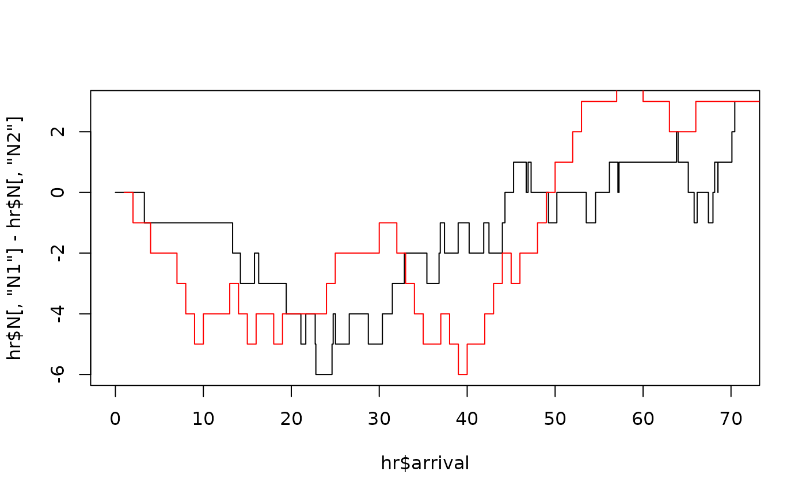

Estimate exponential Hawkes model parameters by maximum likelihood.
The supplied hspec-class object defines the model and the starting
values for optimization with maxLik.
Usage
hfit(
object,
inter_arrival = NULL,
type = NULL,
mark = NULL,
N = NULL,
Nc = NULL,
lambda_component0 = NULL,
N0 = NULL,
mylogLik = NULL,
reduced = TRUE,
grad = NULL,
hess = NULL,
constraints = NULL,
method = "BFGS",
verbose = FALSE,
...,
Nc0 = NULL
)
# S4 method for class 'hspec'
hfit(
object,
inter_arrival = NULL,
type = NULL,
mark = NULL,
N = NULL,
Nc = NULL,
lambda_component0 = NULL,
N0 = NULL,
mylogLik = NULL,
reduced = TRUE,
grad = NULL,
hess = NULL,
constraints = NULL,
method = "BFGS",
verbose = FALSE,
...,
Nc0 = NULL
)Arguments
- object
An
hspec-classobject containing the parameter values.- inter_arrival
A vector of inter-arrival times for events across all dimensions, starting with zero.
- type
A vector indicating the dimensions, represented by numbers like 1, 2, 3, etc., starting with zero.
- mark
A vector of mark (jump) sizes, starting with zero.
- N
Optional cumulative event-count matrix, with one row per input row and one column per event type. Each row contains counts after that event.
- Nc
Optional cumulative mark-total matrix with the same shape as
N.- lambda_component0
Initial values for the lambda component \(\lambda_{ij}\). A finite scalar is expanded to every kernel component. A matrix must match the shape of
alphaandbeta. For the built-in likelihood, supply this argument whentype_col_mapis set.- N0
Initial event counts: a finite scalar or one value per event type. If omitted, use the first row of supplied
N, or zero whenNis absent.- mylogLik
A user-defined log-likelihood function, which must accept an
objectargument consistent withobject.- reduced
Logical; if
TRUE, equal entries within each parameter matrix share one parameter. IfFALSE, each matrix entry is estimated separately. Function components share parameters by name. Conflicting starting values for a shared name produce a warning; the first value is used.- grad
Optional gradient function passed to
maxLik::maxLik(). Its first argument is the optimization parameter vector. IfNULL, use numerical differentiation.- hess
Optional Hessian function passed to
maxLik::maxLik(). Its first argument is the optimization parameter vector. IfNULL, use numerical differentiation.- constraints
NULLor a constraint list passed tomaxLik::maxLik().- method
The optimization method to be used. Refer to
maxLikfor more details.- verbose
Logical; if
TRUE, prints the progress of the estimation process.- ...
Additional parameters for optimization. Refer to
maxLikfor more details.- Nc0
Initial mark totals: a finite scalar or one value per event type. If omitted, use the first row of supplied
Nc, or zero whenNcis absent. This argument must be named.
Value
A maxLik object with an emhawkes attribute
containing the original specification, parameter map, normalized initial-state
arguments, and reduced setting. Use fitted_hspec() to restore the estimated
specification and fit_initial_state() to retrieve its initial-state arguments.
Details
Observations are checked once before optimization. The first row is the initial
state, and supplied counting processes contain values after each event.
Omit type for a univariate model and mark for unit marks. The observation
vectors have the same length. The likelihood ends at the last supplied event.
Functions with a param argument must provide a default named numeric vector;
numeric(0) and functions without param are allowed for fixed components.
A custom mylogLik receives its declared arguments from object, the observation
arguments, lambda_component0, param, and reduced. Optional defaults are
preserved; ... receives the remaining context. Additional inputs should be
captured in the function's environment or given defaults.
When equal matrix entries are grouped, a message lists the affected components
once before optimization. Use suppressMessages(hfit(...)) to hide it.
Setting reduced = FALSE separates matrix entries; function parameters still
share values by name. A numeric zero is a starting value, not a fixed zero.
To fix entries at zero, use a component function with constants at those positions.
To hold optimization parameters at their starting values, pass fixed through
... as described by maxLik::maxLik(). Fixing a shared parameter fixes all
entries that use it.
The built-in likelihood uses the calculation engine selected by
options(emhawkes.engine = "auto"); see logLik() for supported models.
Rcpp accelerates likelihood evaluation. Gradient and Hessian functions are
supplied separately, or computed numerically by maxLik.
fitted_hspec() uses the saved parameter map to restore the estimated model.
fit_initial_state() retrieves the observation window's initial-state arguments.
These are suitable for re-evaluating the likelihood and starting a new simulation.
Keep observations separately and supply them again for inference. The stored
optimization objective can retain data in its function environment.
Save the fit with saveRDS() to retain its model, parameter map, and initial-state information.
Examples
# example 1
mu <- c(0.1, 0.1)
alpha <- matrix(c(0.2, 0.1, 0.1, 0.2), nrow=2, byrow=TRUE)
beta <- matrix(c(0.9, 0.9, 0.9, 0.9), nrow=2, byrow=TRUE)
h <- new("hspec", mu=mu, alpha=alpha, beta=beta)
res <- hsim(h, size=100)
fit <- hfit(h, inter_arrival = res$inter_arrival, type = res$type)
#> hfit: equal starting values within each matrix share a parameter (reduced = TRUE; mu, alpha, beta).
#> Use reduced = FALSE to estimate matrix entries separately.
summary(fit)
#> --------------------------------------------
#> Maximum Likelihood estimation
#> BFGS maximization, 29 iterations
#> Return code 0: successful convergence
#> Log-Likelihood: -245.0405
#> 4 free parameters
#> Estimates:
#> Estimate Std. error t value Pr(> t)
#> mu1 0.10357 0.01918 5.400 6.67e-08 ***
#> alpha1.1 0.21600 0.09858 2.191 0.02845 *
#> alpha1.2 0.29650 0.11754 2.523 0.01165 *
#> beta1.1 1.11245 0.34199 3.253 0.00114 **
#> ---
#> Signif. codes: 0 ‘***’ 0.001 ‘**’ 0.01 ‘*’ 0.05 ‘.’ 0.1 ‘ ’ 1
#> --------------------------------------------
estimated <- fitted_hspec(fit)
initial <- fit_initial_state(fit)
inferred <- do.call(logLik, c(list(object = estimated,
inter_arrival = res$inter_arrival, type = res$type, infer = TRUE), initial))
#> The initial values for intensity processes are not provided. Internally determined initial values are used.
c(fitted = as.numeric(logLik(fit)), restored = inferred$loglikelihood)
#> fitted restored
#> -245.0405 -245.0405
# example 2
# \donttest{
mu <- matrix(c(0.08, 0.08, 0.05, 0.05), nrow = 4)
alpha <- function(param = c(alpha11 = 0, alpha12 = 0.4, alpha33 = 0.5, alpha34 = 0.3)){
matrix(c(param["alpha11"], param["alpha12"], 0, 0,
param["alpha12"], param["alpha11"], 0, 0,
0, 0, param["alpha33"], param["alpha34"],
0, 0, param["alpha34"], param["alpha33"]), nrow = 4, byrow = TRUE)
}
beta <- matrix(c(rep(0.6, 8), rep(1.2, 8)), nrow = 4, byrow = TRUE)
impact <- function(param = c(alpha1n=0, alpha1w=0.2, alpha2n=0.001, alpha2w=0.1),
n=n, N=N, ...){
Psi <- matrix(c(0, 0, param['alpha1w'], param['alpha1n'],
0, 0, param['alpha1n'], param['alpha1w'],
param['alpha2w'], param['alpha2n'], 0, 0,
param['alpha2n'], param['alpha2w'], 0, 0), nrow=4, byrow=TRUE)
ind <- N[,"N1"][n] - N[,"N2"][n] > N[,"N3"][n] - N[,"N4"][n] + 0.5
km <- matrix(c(!ind, !ind, !ind, !ind,
ind, ind, ind, ind,
ind, ind, ind, ind,
!ind, !ind, !ind, !ind), nrow = 4, byrow = TRUE)
km * Psi
}
h <- new("hspec",
mu = mu, alpha = alpha, beta = beta, impact = impact)
hr <- hsim(h, size=100)
plot(hr$arrival, hr$N[,'N1'] - hr$N[,'N2'], type='s')
lines(hr$N[,'N3'] - hr$N[,'N4'], type='s', col='red')

fit <- hfit(h, hr$inter_arrival, hr$type)
#> hfit: equal starting values within each matrix share a parameter (reduced = TRUE; mu, beta).
#> Use reduced = FALSE to estimate matrix entries separately.
summary(fit)
#> --------------------------------------------
#> Maximum Likelihood estimation
#> BFGS maximization, 146 iterations
#> Return code 0: successful convergence
#> Log-Likelihood: -158.4592
#> 12 free parameters
#> Estimates:
#> Estimate Std. error t value Pr(> t)
#> mu1 0.69221 0.42494 1.629 0.1033
#> mu3 0.07379 0.03508 2.104 0.0354 *
#> alpha11 -0.12632 0.06533 -1.934 0.0532 .
#> alpha12 0.01429 0.04916 0.291 0.7712
#> alpha33 0.96110 0.21477 4.475 7.64e-06 ***
#> alpha34 0.29568 0.11634 2.542 0.0110 *
#> beta1.1 0.10275 0.08833 1.163 0.2447
#> beta3.1 1.33410 0.22837 5.842 5.16e-09 ***
#> alpha1n 0.03456 0.06731 0.513 0.6077
#> alpha1w 0.04976 0.06831 0.728 0.4664
#> alpha2n -2.47298 0.27579 -8.967 < 2e-16 ***
#> alpha2w 1.00872 0.11327 8.906 < 2e-16 ***
#> ---
#> Signif. codes: 0 ‘***’ 0.001 ‘**’ 0.01 ‘*’ 0.05 ‘.’ 0.1 ‘ ’ 1
#> --------------------------------------------
# }
# example 3
# \donttest{
mu <- c(0.15, 0.15)
alpha <- matrix(c(0.75, 0.6, 0.6, 0.75), nrow=2, byrow=TRUE)
beta <- matrix(c(2.6, 2.6, 2.6, 2.6), nrow=2, byrow=TRUE)
rmark <- function(param = c(p=0.65), ...){
rgeom(1, p=param[1]) + 1
}
impact <- function(param = c(eta1=0.2), alpha, n, mark, ...){
ma <- matrix(rep(mark[n]-1, 4), nrow = 2)
alpha * ma * matrix( rep(param["eta1"], 4), nrow=2)
}
h1 <- new("hspec", mu=mu, alpha=alpha, beta=beta,
rmark = rmark,
impact=impact)
res <- hsim(h1, size=100, lambda_component0 = matrix(rep(0.1,4), nrow=2))
fit <- hfit(h1,
inter_arrival = res$inter_arrival,
type = res$type,
mark = res$mark,
lambda_component0 = matrix(rep(0.1,4), nrow=2))
#> hfit: equal starting values within each matrix share a parameter (reduced = TRUE; mu, alpha, beta).
#> Use reduced = FALSE to estimate matrix entries separately.
summary(fit)
#> --------------------------------------------
#> Maximum Likelihood estimation
#> BFGS maximization, 37 iterations
#> Return code 0: successful convergence
#> Log-Likelihood: -191.1433
#> 5 free parameters
#> Estimates:
#> Estimate Std. error t value Pr(> t)
#> mu1 0.10755 0.02308 4.659 3.17e-06 ***
#> alpha1.1 0.62799 0.23802 2.638 0.00833 **
#> alpha1.2 0.55832 0.21164 2.638 0.00834 **
#> beta1.1 2.11657 0.67686 3.127 0.00177 **
#> eta1 0.10179 0.27794 0.366 0.71418
#> ---
#> Signif. codes: 0 ‘***’ 0.001 ‘**’ 0.01 ‘*’ 0.05 ‘.’ 0.1 ‘ ’ 1
#> --------------------------------------------
# }
# For more information, please see vignettes.